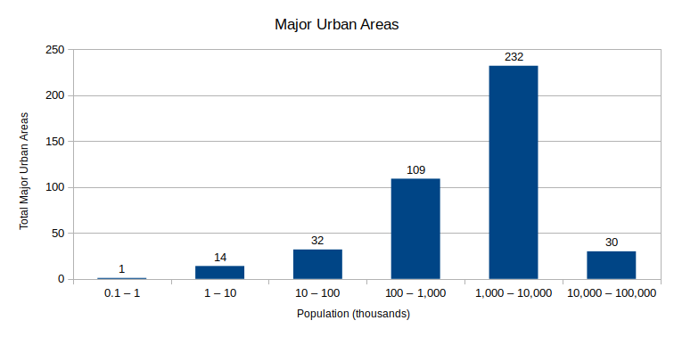
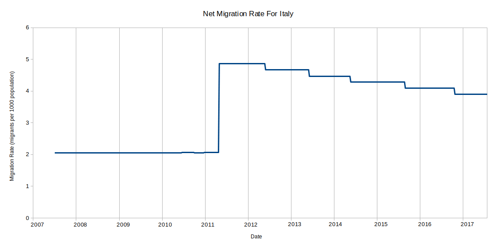

The CIA World Factbook is a fantastic resource. Every country in the world is represented, each with a vast range of data, and all freely available.
Take a second to look at any country and see just how much information is there (eg Romania); it's a truly astonishing resource.
But there's a pretty serious problem. It's only available in textual format, so doing any meaningful analysis is extremely laborious.
The good news is the data has now been converted to a structured format and can be used for many interesting applications that were previously unviable.
The data covers about 260 countries, each with about 200 fields (often containing multiple data points per field). Prior to this data being converted it would have to be gathered manually and rechecked every time the World Factbook is updated (which is weekly).
The latest data is available on github as factbook.json.
A full set of historical data is available for download.
The source code is available on github.com/iancoleman/cia_world_factbook_api (if you want to fetch and parse the data yourself).
If tables and spreadsheets are more your thing, have a look at the Explorer tool.
Here's a demo of some of the things that can now be done that were previously just too much manual work (using data from Monday 2nd January 2017).
It's now possible to generate charts for the World Factbook, such as this histogram for the population of Major Urban Areas.
It's created using 418 places from 221 countries. There were 38 countries with no major urban areas listed (eg Christmas Island).
And the one major urban area with less than a thousand people...? It's Melekeok (the capital of Palau).
This is a table of stats for the number of Registered Air Carriers per country:
| Registered Air Carriers | |
|---|---|
| Total | 1196 |
| Minimum | 0 |
| Maximum | 92 |
| Mean | 4.7 |
| Median | 12 |
| Mode | 0 |
This comes from 257 countries, with 187 countries having at least one registered air carrier and 70 countries having none.
The country with the most air carriers? The United States has 92.
Some data from the factbook is presented in a table of global rank, such as Health Expenditure, but many others (such as Physicians Per 1000 Population) do not come tabulated.
The data set allows any fact to be ranked by country.
| Rank | Country | Physicians per 1000 population |
|---|---|---|
| 1 | Qatar | 7.74 |
| 2 | Monaco | 7.17 |
| 3 | Cuba | 6.72 |
| 4 | San Marino | 5.1 |
| 5 | Spain | 4.95 |
| ... | ||
| 171 | Tanzania | 0.03 |
| 172 | Sierra Leone | 0.02 |
| 173 | Niger | 0.02 |
| 174 | Malawi | 0.02 |
| 175 | Liberia | 0.01 |
| Full Table | ||
This data comes from 259 countries, of which 175 had a value for physicians per 1000 population and 84 did not.
This statistic is currently not available for more than 387 million people, the largest country of which is the Philippines with 102 million people.
Comparing this data with other sources is now possible, for example Maternal Mortality Rate statistics can be found from both the World Health Organization and the CIA World Factbook.
| Country | Deaths per 100K live births | |
|---|---|---|
| CIA | WHO | |
| Afghanistan | 396 (2015) | 396 (2015) |
| Albania | 29 (2015) | 29 (2015) |
| Algeria | 140 (2015) | 140 (2015) |
| Angola | 477 (2015) | 477 (2015) |
| Argentina | 52 (2015) | 52 (2015) |
| ... | ||
| Venezuela | 95 (2015) | 95 (2015) |
| Vietnam | 54 (2015) | 54 (2015) |
| Yemen | 385 (2015) | 385 (2015) |
| Zambia | 224 (2015) | 224 (2015) |
| Zimbabwe | 443 (2015) | 443 (2015) |
| Full Table | ||
The WHO data has data for 181 countries, compared to the CIA which covers 185 countries. The four extra countries are The World, Gaza Strip, West Bank and Puerto Rico.
The CIA doesn't have data for 74 countries, some of which is to be expected (eg Pacific Ocean has no population).
The data matches perfectly for all 181 comparable countries.
It's worth noting the global rank table for Maternal Mortality Rate is not up to date and only has data from 2010 or earlier (another benefit to using this data set).
The data goes back to 2007 (thanks to the Internet Archive), which makes it possible to see how facts have changed over time.
A spike in Net Migration Rate for Italy in 2011 is clear, which indicates increased migration (possibly due to the Arab Spring or a precursor to the European Migrant Crisis). 
However, other data sources seem to suggest the number of people involved in specific large immigration events are not significant in the overall measure of net migration in Italy, despite being significant in their own right.
This chart is generated from 524 data points between June 2007 and June 2017. Collecting this data manually for each country would take an immense amount of time, but is now instantly available thanks to the historical data.
It's also worth noting the following disclaimer from the Factbook FAQ regarding time series for economic data:
The CIA World Factbook is an extensive resource, but the text format it's presented in has left it sitting idle. This project has unlocked the data which can now be used in many ways for many purposes without the drudgery of manually transcribing reams of data.
Consider the data which spans about 10 years, 260 countries and 200 data points. Transcribing an average of one data point every five seconds would take a person over four years to transcribe all the data. And that's not including any ongoing work as new versions are released on their weekly schedule.
I don't know how this data may be used in the future, but I know it's a lot more useful in structured form than in text. I hope people come up with some some great insights from the data in the factbook.
There are a lot of edge cases in the data. Because each data point represents potentially millions of people, I felt a sincere obligation to accurately converting every data point. This was difficult since the data can be very unstructured and there are lots of unusual formats.
The most unstructured data was often age-related information, especially Suffrage and Military Service Obligation. Try to imagine how the following examples might be structured in a consistent manner; it's almost impossible without resorting to an absurdly complex structure.
A fair amount of specially crafted code was required to account for facts with different formats than other countries.
There are almost certainly still some errors in the output data. If you happen to find an error, please report it so the data can be as accurate and useful as possible.
There were some frustrating inconsistencies in the format of data. For example, the Ports And Terminals data.
The term "river or lake port" is used by The Democratic Republic of the Congo, but Canada uses the term "river and lake port", and all other countries use just "river port" or "lake port".
Some countries use the generic term "bulk cargo port" and others use "dry bulk cargo port".
Aruba has "cruise ports" but France has "cruise / ferry ports".
These kinds of inconsistencies aren't significant issues but they do make a lot of extra work detecting and coding the edge cases. Ports And Terminals is just one example of many such situations.
Over time the html structure of the factbook has changed, which made it necessary to detect old vs new versions in order to correctly extract the text for each data point.
The format change is sometime obvious, sometimes subtle. For an obvious one, have a look at the Australian factbook page in 2008 vs 2016.
Some countries categorize Population Distribution as part of Geography, others as part of People And Society. Despite having the same name, it has different fields in the Factbook backend (fieldkey 2266 and 2267). This is an interesting quirk. I can easily imagine some bureaucracy behind this.
For example, Iceland has duplicate entries for Population Distribution under both Geography and People And society.
In the glossary only the People And Society entry has a definition, suggesting the Geography entry is the legacy one.
The archived pages sometimes contain errors which give some clues about the technology used to host the factbook webpages.
Technical debug information is shown instead of the expected country stats in the May 2012 page for Howland Island.
It looks like the site is served using Adobe ColdFusion. The stack trace contains a lot of information, but it isn't relevant data for the country so these kinds of pages are blacklisted by the scraper when they're found.
One particular error came up thanks to the presence of a personal greeting - "Hi Trent" - which can be seen on the February 2014 page for Madagascar - Government - Administrative Divisions.
It was a strange but nice reminder that real people maintain this data. I can't help but wonder what circumstances led to the inclusion of this wayward content.
Dealing with so much data at a global scope was existentially challenging. There were times where I'd step back and consider a single data point for a country that may typically be considered tiny, and try to really understand that this data point came to exist because of the daily experiences of thousands or millions of people. It was a truly humbling experience to be so intimate with this data set.
{kind=link}